Konfigurasi DNS Server (BIND9)
DNS (Domain Name System) Server berfungsi menerjemahkan nama domain (misalnya nazilabror.com) menjadi alamat IP, sehingga client tidak perlu menghafal angka IP untuk mengakses layanan di jaringan. Jobsheet ini menggunakan network kedua (ens33/ens37) yang sudah dikonfigurasi dengan IP statis 192.168.27.1/24 pada jobsheet sebelumnya, dengan nama domain contoh nazilabror.com. Ikuti langkah-langkah berikut secara berurutan.
Jobsheet ini dikhususkan untuk Debian 13, karena paket bind9 versi baru (9.20.x) di Trixie TIDAK LAGI menyertakan file bawaan seperti db.local, db.127, db.0, db.255, bind.keys, dan named.conf.default-zones secara otomatis seperti di Debian 11/12. Jadi setelah instalasi, folder /etc/bind akan terlihat lebih "kosong" dari biasanya — ini normal, bukan error. Semua file zona pada tutorial ini dibuat manual dari nol.
1. Pastikan Koneksi Internet Sudah Terhubung
Sebelum memulai instalasi, pastikan Debian sudah terkoneksi ke internet, karena paket BIND9 akan diunduh dari repository online.
2. Update Sistem dan Install Paket BIND9
Perbarui daftar paket, lalu install BIND9 beserta tools-nya:
# apt install bind9 -y
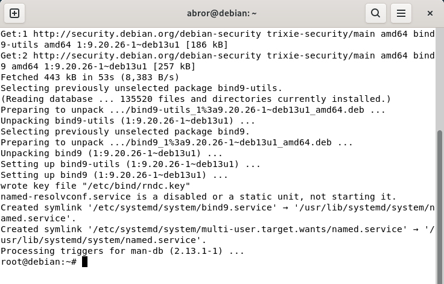
Proses instalasi paket bind9 berjalan sampai selesai.
3. Cek Isi Folder /etc/bind
Pindah ke direktori konfigurasi BIND9, lalu lihat file apa saja yang tersedia:
# ls
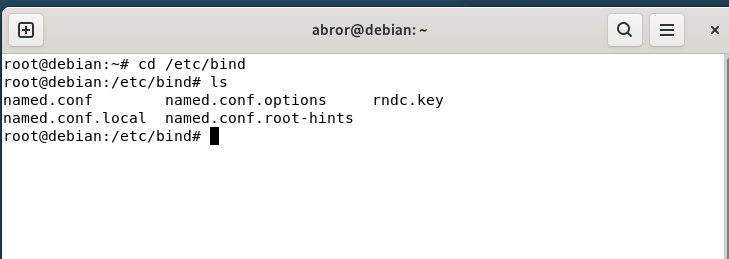
Di Debian 13, isinya hanya named.conf, named.conf.local, named.conf.options, named.conf.root-hints, dan rndc.key — file db.* memang tidak ada dan akan kita buat sendiri.
4. Edit named.conf.local — Daftarkan Zona Forward & Reverse
File ini tempat mendaftarkan zona domain yang akan dikelola server. Buka dengan:
Isi dengan konfigurasi berikut (sesuaikan nama domain dan network dengan milik kalian):
type master;
file "/etc/bind/db.nazilabror.com";
};
zone "27.168.192.in-addr.arpa" {
type master;
file "/etc/bind/db.192";
};
Penjelasan singkat:
zone "nazilabror.com" — zona forward, untuk menerjemahkan nama domain → IP.
zone "27.168.192.in-addr.arpa" — zona reverse, untuk menerjemahkan IP → nama domain. Angka network (192.168.27) ditulis terbalik menjadi 27.168.192.
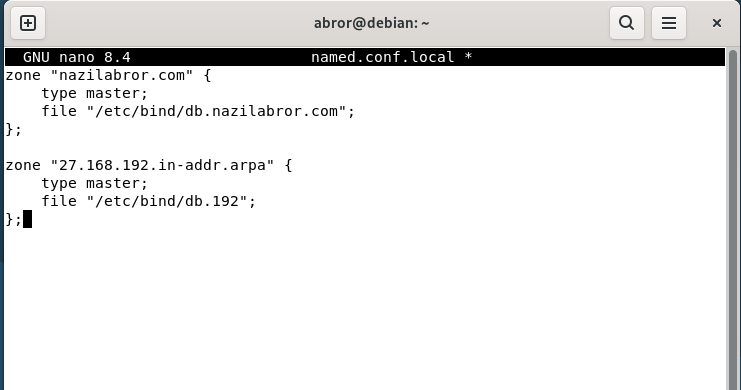
Contoh isi named.conf.local setelah diisi. Simpan dengan Ctrl+O lalu Enter, keluar dengan Ctrl+X.
5. Buat File Zona Forward (db.nazilabror.com)
File ini berisi data yang menerjemahkan domain menjadi IP. Buat dengan:
Isi dengan:
; BIND data file for nazilabror.com
;
$TTL 604800
@ IN SOA ns1.nazilabror.com. admin.nazilabror.com. (
3 ; Serial
604800 ; Refresh
86400 ; Retry
2419200 ; Expire
604800 ) ; Negative Cache TTL
;
@ IN NS ns1.nazilabror.com.
ns1 IN A 192.168.27.1
@ IN A 192.168.27.1
www IN A 192.168.27.1
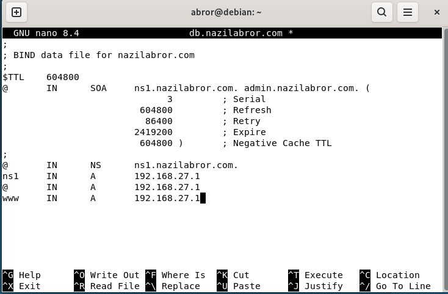
Isi file db.nazilabror.com setelah selesai diketik.
6. Buat File Zona Reverse (db.192)
File ini berisi data kebalikannya, dari IP ke nama domain. Buat dengan:
Isi dengan:
; BIND reverse data file for 192.168.27.0/24
;
$TTL 604800
@ IN SOA ns1.nazilabror.com. admin.nazilabror.com. (
3 ; Serial
604800 ; Refresh
86400 ; Retry
2419200 ; Expire
604800 ) ; Negative Cache TTL
;
@ IN NS ns1.nazilabror.com.
1 IN PTR nazilabror.com.
Baris PTR "1" mewakili oktet terakhir dari IP 192.168.27.1 (yaitu angka 1), yang diarahkan balik ke nama domain nazilabror.com.
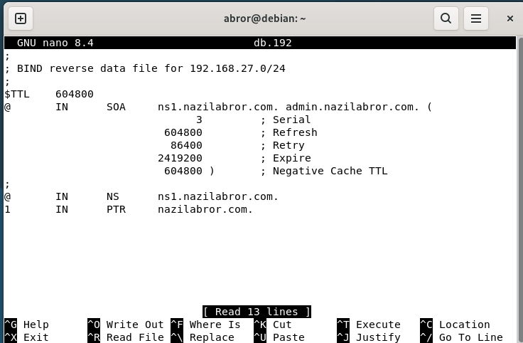
Isi file db.192 setelah selesai diketik.
7. Set Kepemilikan File Zona
Pastikan file zona dimiliki oleh user bind agar bisa dibaca oleh service BIND9:
8. Cek Syntax Konfigurasi dan Zona
Sebelum restart service, selalu cek dulu apakah konfigurasi dan file zona valid, supaya lebih mudah melacak kalau ada kesalahan penulisan:
Jika tidak ada output/pesan, artinya named.conf dan file include-nya sudah benar. Lanjutkan cek tiap zona:
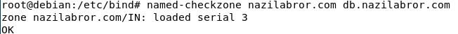
Hasil OK menandakan file zona forward valid.
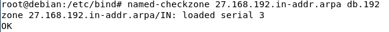
Hasil OK menandakan file zona reverse valid.
9. Restart dan Cek Status BIND9
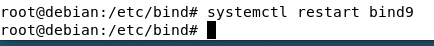
Tidak ada output setelah restart berarti berhasil (normal).
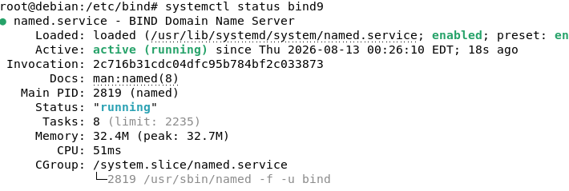
Jika berhasil, status akan menunjukkan active (running) berwarna hijau seperti di atas. Jika masih gagal, periksa kembali langkah 4–6.
10. Arahkan Resolver Debian ke DNS Server Sendiri
Secara default, /etc/resolv.conf di Debian di-generate otomatis oleh dhcpcd dan akan menimpa perubahan manual setiap kali network di-restart. Karena kita tetap mempertahankan NAT/DHCP untuk internet, cukup edit langsung file resolv.conf-nya, lalu kunci agar tidak ditimpa ulang.
Kosongkan isi bawaan, ganti menjadi:
nameserver 192.168.27.1
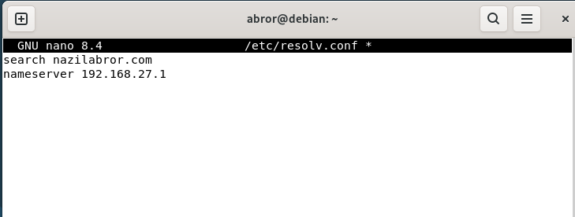
Simpan (Ctrl+O, Enter, Ctrl+X), lalu kunci file supaya tidak ditimpa ulang oleh dhcpcd:
# lsattr /etc/resolv.conf
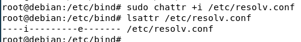
Flag "i" pada hasil lsattr menandakan file sudah terkunci (immutable).
11. Uji Coba DNS Server
Terakhir, uji apakah DNS server sudah berfungsi menerjemahkan domain ke IP dengan benar.
a. Uji dengan perintah dig
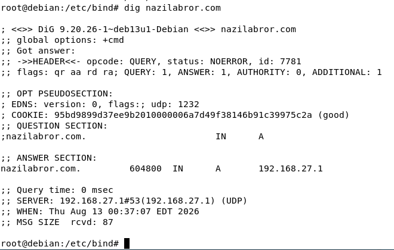
Perhatikan bagian ANSWER SECTION — domain nazilabror.com berhasil dijawab dengan IP 192.168.27.1, dan bagian SERVER menunjukkan query dijawab oleh 192.168.27.1 (server DNS kita sendiri).
b. Uji dengan perintah ping
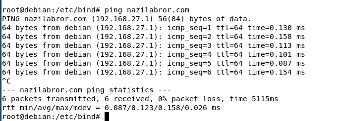
Ping berhasil dan otomatis menerjemahkan nazilabror.com menjadi 192.168.27.1 — tanda DNS resolving sudah berjalan.
Jika dig menampilkan jawaban pada ANSWER SECTION dan ping berhasil menerjemahkan nama domain menjadi IP tanpa perlu mengetik alamat server DNS secara manual (@192.168.27.1), artinya DNS Server BIND9 di Debian 13 sudah berjalan dengan baik.